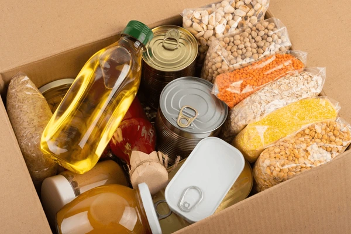
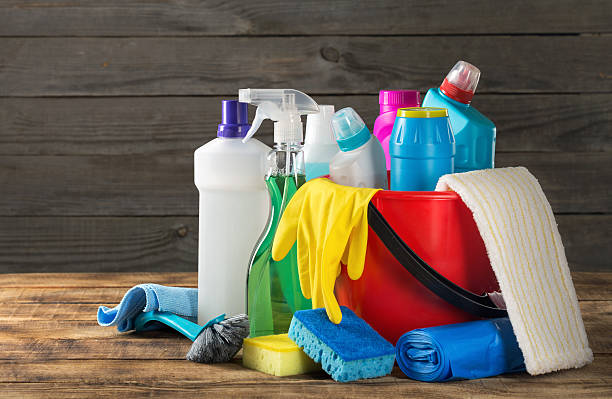

Donar Pertenencias
Podes donar colchones, camas, sabanas, muebles, sillas, mesas, cualquier pertenencia.
DonaDonar es una forma maravillosa de ayudar a quienes más lo necesitan. Existen diversas maneras de hacerlo, dependiendo de tus preferencias y posibilidades. Aquí te explicamos algunas de las formas más comunes:
Recuerda que cada acto de donación, por pequeño que sea, puede marcar una gran diferencia en la vida de alguien. ¡Anímate a donar y ser parte del cambio!
En un mundo donde muchos enfrentan desafíos inimaginables, tu generosidad puede ser la luz que ilumine su camino. Cada donación, por pequeña que sea, tiene el poder de transformar vidas y brindar esperanza a quienes más lo necesitan. Imagina el impacto de tu contribución: un niño que recibe una comida nutritiva, una familia que encuentra refugio seguro, o un estudiante que puede continuar su educación gracias a tu apoyo.
Tu ayuda no solo proporciona recursos materiales, sino que también envía un mensaje poderoso de solidaridad y compasión. Al donar, te conviertes en parte de una comunidad global que se une para hacer frente a la pobreza, la injusticia y la desesperanza. Juntos, podemos construir un futuro más brillante y equitativo para todos.
No esperes más para hacer la diferencia. Tu donación puede ser el primer paso hacia un cambio significativo. Únete a nosotros en esta misión de amor y generosidad. Dona hoy y sé el héroe que alguien necesita.
Registrarse antes de realizar una donación es un paso fundamental que garantiza la transparencia y seguridad tanto para el donante como para la organización receptora. Este proceso permite:
Registrarse es un pequeño paso que contribuye significativamente a la integridad y efectividad del proceso de donación, asegurando que cada contribución llegue a su destino de manera segura y eficiente.
Podes donar colchones, camas, sabanas, muebles, sillas, mesas, cualquier pertenencia.
Dona